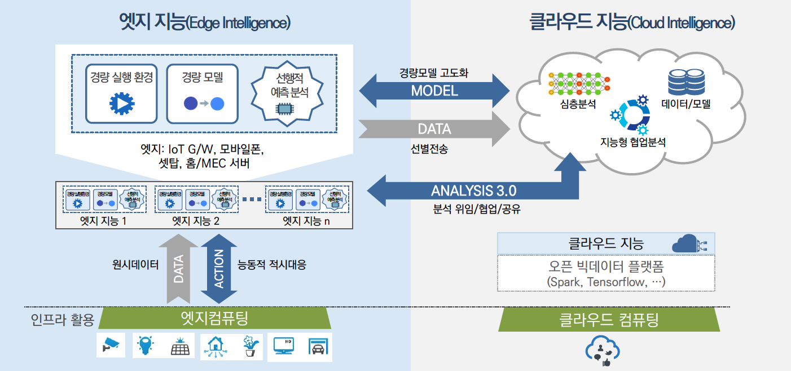
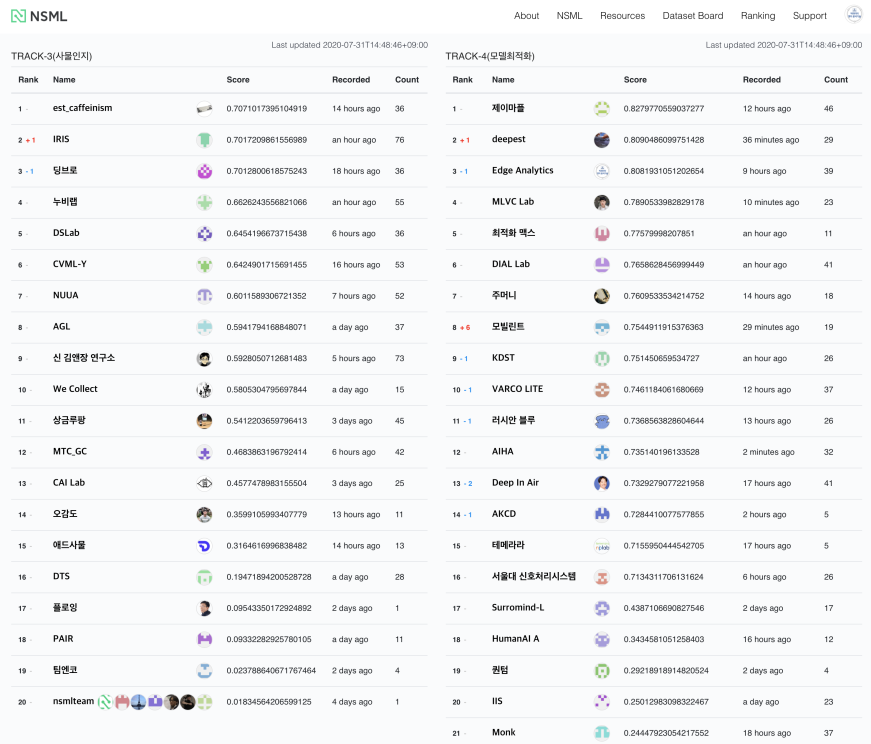

부하분산과 능동적 적시대응을 위한 빅데이터 엣지 분석 기술

엣지 AI 기반 인공지능 모델 최적화 및 경량화 기술개발

연구소개 동영상
연구내용
모델 압축 기술 (Model Compression)
- (요약) 가지치기, 이진화, 양자화 및 허프만 코딩 등의 기법을 선별적·통합적으로 적용하여 학습 시 훈련 데이터의 표현력 (Representation)은 충분히 습득하면서 동시에 불필요한 가중치 값을 효과적으로 제거하거나 특정 수치로 단순화시켜 연산 효율을 개선하는 모델 경량화 기술 분야
- (관련연구) Deep Compression 2016, XNOR-Net 2016,BMXNet 2017
효율적인 합성곱 필터 기술 (Efficient Convolution Layer)
- (요약) CNN 계열 모델 학습 시 가장 큰 계산량을 요구하는 합성곱 연산을 경량화하여 학습에 필요한 파라미터 개수를 줄임으로써, 모델 크기 및 연산량 축소에 기여하는 기술 분야. 현재 Depthwise Convolution, Inverted Residual 및 Linear Bottlenecks 기법을 기반으로 제안된 Mobilenet v2가 가장 우수한 성능을 보이는 것 확인됨
- (관련연구) Inception 2014, Mobilenet v1/v2 2017/2018, Xception 2017, ShuffleNet 2017
모델 분산 처리 기술 (Distributed Learning and Inference)
- (요약) 모바일 Onloading 및 클라우드 Offloading 방식을 절충한 형태의 추론 수행하거나, 신경망 그래프를 분할하여 개별 CPU/GPU로 분산 학습하는 연구 분야. 엣지 기반 추론의 지연시간 축소 및 에너지 절감 효과를 제공하거나, 분산 학습을 통한 성능 개선의 효과가 있음
- (관련연구) MCDNN 2016, Neurosurgeon 2017,Device Placement Optimization with Reinforcement Learning 2017
경량 모델 자동 탐색 기술(Model Searching Automation)
- (요약) 강화 학습을 통해 모바일 추론에 최적화된 CNN 모델 구조를 탐색하는 과정을 자동화하거나, 연산량 대비 모델 압축비 조정을 자동화하는 연구 기법. 모바일 추론에 따른 정확도, 지연 시간, 에너지 소모량 등을 주요한 성능 지표로 선정하고 이들을 조율하는데 중점을 두고 있음
- (관련연구) MnasNet 2018, NetAdapt 2018, ADC 2018
자원 제약형 모델 기술(Resource Constrained Model)
- (요약) 기기의 메모리, 에너지 사용을 최소화하면서, 적절한 학습·추론 성능을 보장하기 위해 자원 제약형 임베디드 또는 IoT 기기에 특화된 머신러닝 모델을 제안하는 연구 동향. 신경망이 아닌 Tree learner, k-Nearest Neighbor 등의 머신러닝 테크닉을 활용하며, Weight/Sparse Factorization 등의 경량화 연산을 지원하는 별도의 딥러닝 툴킷 개발, 부동/고정 소수점 연산을 Bitwise 연산으로 대체 및 네트워크 이진화가 주요 연구 기법으로 제안되고 있음
- (관련연구) Bonsai 2015, DXTK 2016, BNN 2016, ProtoNN 2017, TinyDL 2017, TBNs 2017
하드웨어 가속화 기술 (Hardware Acceleration)
- (요약) 벡터/행렬 연산을 병렬 처리하기 위한 전용 하드웨어 TPU(Tensor Processing Unit), On-Device AI 응용 추론을 위한 전용 VPU(Visual Processing Unit) 프로세스 및 GPU Cluster 기반 가속기 등의 연구개발이 주요 IT 기업에 의해 주도되고 있음
- (관련연구) Google TPU 2016, Intel Movidius 2017, SKT AIX (AI Inference Accelerator) 2018
연구실적
MicroNet Challenge (hosted at NeurIPS 2019)
-(요약) Contestants will compete to build the most efficient model that solves the target task to the specified quality level. The competition is focused on efficient inference, and uses a theoretical metric rather than measured inference speed to score entries. We hope that this encourages a mix of submissions that are useful on today’s hardware and that will also guide the direction of new hardware development.
-(태스크)CIFAR-100 Classification: A widely popular image classification dataset of small images. The dataset is composed of 50,000 training images and 10,000 development images. Entries are required to achieve 80% top-1 accuracy on the test set.
-(결과) KAIST AI team achieved the 2nd place and the 3rd place in the MicroNet Challenge 2019.
-(링크) MicroNet Challenge
RecSys – ACM Recommender Systems
-(요약)In a session-based recommendation service, currently offered by many online companies including trivago, it is important to effectively incorporate user interactions into recommendations. However, a major challenge lies in the fact that both inter-session and intra-session contexts should be considered at the same time for recommendations to become effective. To address this issue, we propose a pipelined hybrid recommender system that considers the two contexts simultaneously via weighted summation of loss functions designed for the combination of a recurrent neural network (RNN) and a convolutional neural network (CNN). With the hybrid system, our team, OSI LAB, achieved the final score of 0.670167 and reached the 16th place in the RecSys Challenge 2019. Our source code is available from https://github.com/jhoon-oh/recsys2019challenge.
-(링크) A Pipelined Hybrid Recommender System for Ranking the Items on the Display
전자통신동향분석(경량딥러닝 기술동향)
-(요약) Considerable accuracy improvements in deep learning have recently been achieved in many applications that require large amounts of computation and expensive memory. However, recent advanced techniques for compacting and accelerating the deep learning model have been developed for deployment in lightweight devices with constrained resources. Lightweight deep learning techniques can be categorized into two schemes: lightweight deep learning algorithms (model simplification and efficient convolutional filters) in nature and transferring models into compact/small ones (model compression and knowledge distillation). In this report, we briefly summarize various lightweight deep learning techniques and possible research directions.
-(링크) Recent R&D Trends for Lightweight Deep Learning
전자통신동향분석(자동 기계학습(AutoML) 기술동향)
-(요약) The performance of machine learning algorithms significantly depends on how a configuration of hyperparameters is identified and how a neural network architecture is designed. However, this requires expert knowledge of relevant task domains and a prohibitive computation time. To optimize these two processes using minimal effort, many studies have investigated automated machine learning in recent years. This paper reviews the conventional random, grid, and Bayesian methods for hyperparameter optimization (HPO) and addresses its recent approaches, which speeds up the identification of the best set of hyperparameters. We further investigate existing neural architecture search (NAS) techniques based on evolutionary algorithms, reinforcement learning, and gradient derivatives and analyze their theoretical characteristics and performance results. Moreover, future research directions and challenges in HPO and NAS are described.
-(링크) Recent Research & Development Trends in Automated Machine Learning
정보과학회 논문지(지능형 도시에서 미세먼지 예측을 위한 심층 학습 기법 적합성 평가)
-(요약) 대기중 미세먼지 농도 증가와 미세먼지가 인체에 끼치는 해로움에 대한 관심이 커지면서 미세먼지에 대한 신체 노출을 줄이기 위한 방법으로 미세먼지 예측이 떠오르고 있다. 또한 지역별 미세먼지 수치 관측에 대한 요구가 증가하고 있지만 미세먼지 관측소가 부족해 요구를 만족하기 어렵다. 본 논문에서는 스마트 시티 데이터를 활용하여 미세먼지 관측소가 부족한 문제를 해결하고 미세먼지 수치를 예측하고자 한다. 스마트 시티 데이터 같은 시계열 데이터를 다루는 딥러닝 모델은 입력 데이터의 특성 수에 영향을 받기때문에 미세먼지 예측에 적합한 모델을 찾아야한다. 데이터 특성이 다른 두 스마트 시티 데이터에 대해 다층 신경망, LSTM, CNN-LSTM 모델을 학습하여 RMSE, MAPE의 값과 표준편차를 비교하여 적합한 딥러닝 모델을 제시한다. 제시한 모델과 기존 연구들에서 사용된 모델을 비교한 결과 제시한 모델이 더 정확한 예측을 수행하였다.
-(링크)
International Conference on Information and Communication Technology Convergence(A Sandpile based Load Distribution over Edges)
-(요약)Prior load balancing heuristics for edge computing require additional efforts for collecting and analyzing the global knowledge on a system. To this end, we propose a sandpile based load distribution scheme, which confidently guarantees that the entire edge resources naturally evolve towards the most stable state in a natural fashion. Our scheme is evaluated with three heuristic strategies and their performance is discussed in terms of avalanche behavior, latency minimization, and self-organized criticality.
-(링크)
12th IEEE/ACM International Conference on Utility and Cloud Computing(Towards Self-Organized Load Distribution over Chaotic Resources)
-(요약) This paper addresses a question of whether resources suffering nonlinear fluctuations can maintain their stability as a system expands for computing tasks in a distributed manner. To this end, we suggest that by evolving individual resources following the self-organized criticality of sandpile model, the whole load distribution system can reach a stable state after a small but extremely local overhead occurs, leading to lots of avalanches. The proposed load balancing approach is evaluated in terms of latency minimization.
-(링크)
International Conference on Information and Communication Technology Convergence(Towards Understanding Architectural Effects on Knowledge Distillation)
-(요약)Knowledge distillation is a promising model compression solution, which adopts an apprenticeship (teacher-student) learning approach. Even referring to the same teacher network, it has reported different distillation performance according to a used student network architecture in current works. To tackle this issue, we investigate how scaling depth and width over layers influences learning capability based on distillation. Our experiment results show that depth scaling is a more determinant factor than width for selecting a smaller network in knowledge distillation.
-(링크)
International Conference on Information and Communication Technology Convergence(Where to Cut and Paste: Data Regularization with Selective Features)
-(요약)Deep convolutional neural networks are continually evolving through various effective training methods such as data augmentation. Among data augmentation methods, regional dropout or replacement strategies such as [3], [4], [5] have been proved effective in recognition and localization performance. However, such methods suffer from unintended content corruption like informative pixel loss. For example, cutting and pasting a random patch may consist of areas that are not important and even if a new cutout patch consists of informative pixels, it could be pasted at useful locations of input covering the interest of the object. Therefore, this operation can cause too much or meaningless regularization. Motivated by this, we propose a new data augmentation method strategy, called FocusMix, which exploits informative pixels based on proper sampling techniques. Through experiments, we analyzed and compared various data augmentation methods to provide improvements and effectiveness of FocusMix. Finally, we have shown that FocusMix results in improvements in performance compared to other data augmentation methods.
-(링크)
International Conference on Information and Communication Technology Convergence(A Multi-Scaled Method for Parallel Bayesian Optimization in Deep Predictive Analytics)
-(요약)This paper proposes a new roll-out scaling method for parallel Bayesian optimization and discusses how the proposed multi-scaled optimization guarantees a better convergence speed with outperformed accuracy than the conventional parallel search algorithms. Experiment results demonstrate that an entire search space can be efficiently reduced to more feasible subdomains. The performance of parallel Bayesian search can be further accelerated based on the interchangeable local evidence by properly adjusting three quantitative aspects in terms of space factorization, search direction, and architecture scaling.
-(링크)
European Conference on Computer Vision 2020(Efficient Approximation of Filters for High-Accuracy Binary Convolutional Neural Networks)
-(요약)This paper proposes a new roll-out scaling method for parallel Bayesian optimization and discusses how the proposed multi-scaled optimization guarantees a better convergence speed with outperformed accuracy than the conventional parallel search algorithms. Experiment results demonstrate that an entire search space can be efficiently reduced to more feasible subdomains. The performance of parallel Bayesian search can be further accelerated based on the interchangeable local evidence by properly adjusting three quantitative aspects in terms of space factorization, search direction, and architecture scaling.
-(링크)
The KIPS Spring Conference 2019(모바일 딥러닝을 위한 신경망 성능 평가에 관한 연구)
-(요약)모바일 환경에서 다양한 AI 관련 응용을 수행하기 위해, 정확도에 기반한 크고 깊은 신경망 이외에, 정확도를 비교적 유지하면서 좀더 효율적인 신경망 구조에 대한 다양한 연구가 진행중이다. 본 논문에서는 모바일 딥러닝을 위한 다양한 임베디드 장치 및 모바일 폰에서의 성능 평가를 통해 경량 신경망의 비교 분석에 대한 연구를 담고 있다.
-(링크)
The Korea Computer Congress 2019(스마트 시티 미세먼지 예측을 위한 딥러닝 모델 분석)
-(요약) 미세먼지가 인체에 끼치는 해로움에 대한 관심이 커지면서 미세먼지에 대한 신체 노출을 줄이기 위한 방법으로 미세먼지 예측이 떠오르고 있다. 또한 지역별 미세먼지 수치 관측에 대한 요구가 증가하고 있지만 미세먼지 관측소가 부족해 요구를 만족하기 어렵다. 본 논문에서는 스마트 시티 데이터를 활용하여 미세먼지 관측소가 부족한 문제를 해결하고 미세먼지 수치를 예측하고자 한다. 스마트 시티 데이터는 지능형 장비에 설치된 센서에 따라 데이터의 특성이 달라 지능형 장비 마다 적합한 인공 신경망을 찾아야한다. 데이터 특성 다른 두 지능형 장비에 대해 다층 신경망, LSTM, CNN-LSTM 모델을 적용하여 RMSE 값과 MAPE 값을 비교하여 적합한 인공 신경망을 제시한다.
-(링크)
The Korea Computer Congress 2020(전이학습 기반 주차면 객체탐지 모델성능 개선에 관한 연구 )
-(요약)본 논문에서는 사회적으로 꾸준히 언급되고 있는 주차난 문제를 해결하고자 스마트파킹 애플리케이션에 적용할 수 있는 딥러닝 기반 객체식별 알고리즘을 분석하고, 엣지(Edge) 기기에서 실시간으로 객체를 검출하기 위한 적합한 모델을 제안하기 위해 개별 객체식별 모델의 성능을 비교 및 평가하고자 한다. 이를 위해 주요 객체식별 방법론의 특성에 대해 살펴보고, 대표적인 One-Stage 기법인 YOLO(You Only Look Once)를 활용하여 주차장의 비 점유공간을 실시간으로 검출하기 위한 고려사항에 관해 논의한다. 또한, 주차장의 비 점유공간을 검출하기 위해 커스텀 데이터(Custom Data)를 이용한 전이학습(Transfer Learning)을 수행하여 기존 One-Stage 객체식별 기법의 단점인 낮은 정확도 문제를 개선하였고, 실험을 통해 정확도, 초당 프레임 속도 및 추론시간을 측정하여 성능을 분석한 결과 엣지 기기에서의 객체식별에 적합한 모델로는 Tiny-YOLOv3 모델이라고 판단한다.
-(링크)
챌린지대회
NeurIPS 2019(경량 신경망 챌린지(MicroNet) 2위/3위/4위)

인공지능그랜드챌린지 2020(1단계 대회 모델 경량화 부문 3위 입상)

NeurIPS 2020(Blackbox optimization 대회 8위 입상)

Acknowledgement
This work was supported by Institute for Information &
Communications Technology Promotion (IITP) grant funded
by the Korea government (MSIT) [No.2018-0-00278,
Development of Big Data Edge Analytics SW Technology
for Load Balancing and Active Timely Response].
Acknowledgement
This work was supported by Institute for Information &
Communications Technology Promotion (IITP) grant funded
by the Korea government (MSIT) [No.2020-0-02215,
Development of Model Optimization and Lightweight based on Edge Technology].